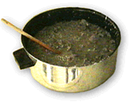
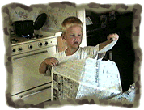
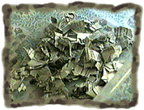
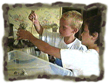
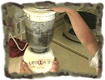
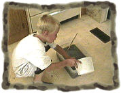
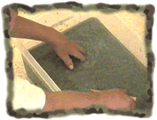

| |
Slurry |
The secret is in the slurry:
Making slurry is the first step of the papermaking process. I had an art teacher that called the pulp and water mixture, slurry. I just like saying slurry. -Karen
Be careful when heating the slurry.

Slurry reminds me of old oatmeal. -Steven
|
 tear newspaper |
 into small pieces |
 add to a pot of water and heat |
|
 blend to a pulp |
 in a large tub add water to pulp |
 stir well (you've got slurry!) |

|
What other things can you add to the slurry? Visit a factory that recycles newspaper or makes paper. How could you make colored slurry? How is this like paper mache? |
|
|
|
|
|
|
|
|
 Gathered by topic |
 Connected together |
 Index of ideas |
 Search |

 Newspaper challenge
Newspaper challenge